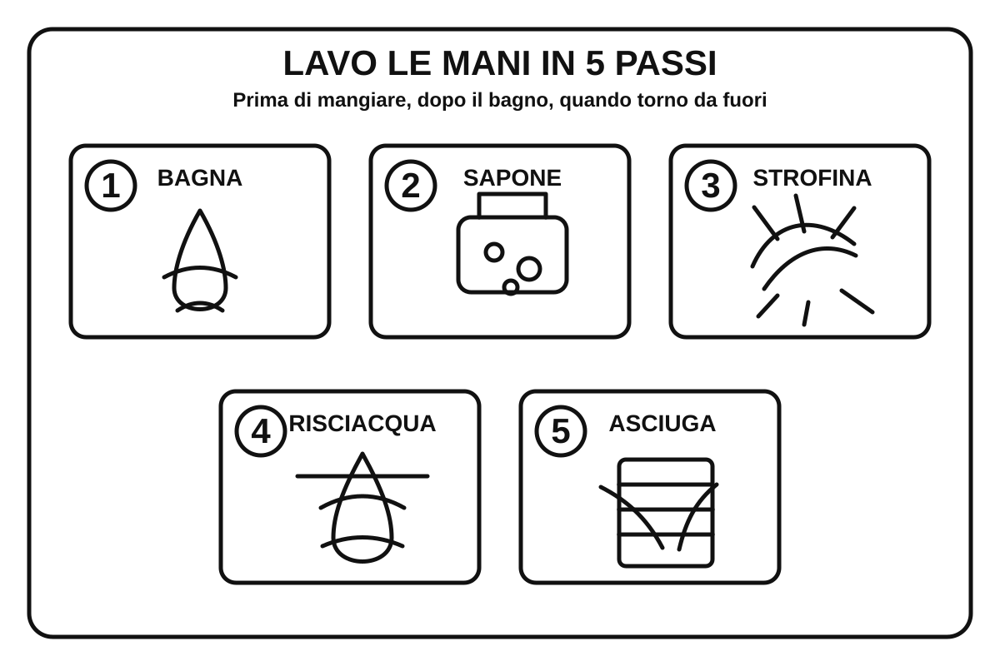

Protezione CivileGruppo Comunale Volontari — Genzano di Roma
Bambini · 3-5 anni
Come lavarsi le mani
3-5 anni · sequenza visiva semplice🧼 Guarda i 5 passi e ripetili con un adulto: bagna, sapone, strofina, risciacqua, asciuga.
